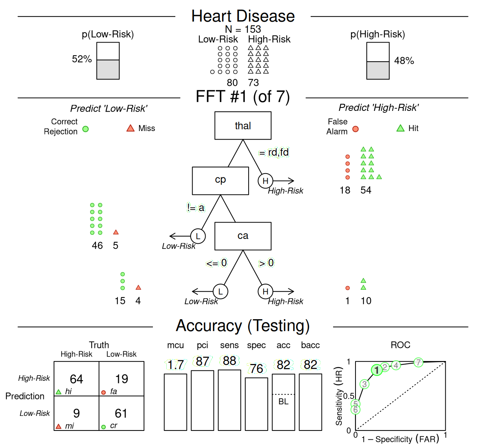
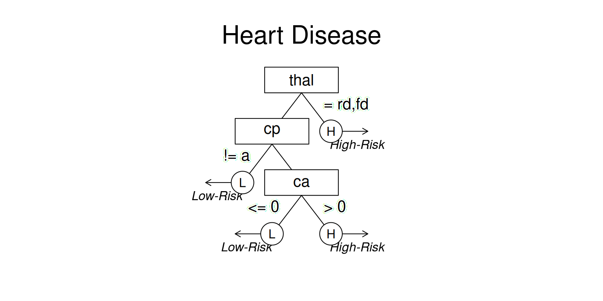

Tutorial: Creating FFTs for heart disease
Nathaniel Phillips and Hansjörg Neth
2024-05-23
Source:vignettes/FFTrees_heart.Rmd
FFTrees_heart.RmdTutorial: Creating FFTs for heart disease
This tutorial on using the FFTrees package follows the examples presented in Phillips et al. (2017) (freely available in html | PDF):
- Phillips, N. D., Neth, H., Woike, J. K. & Gaissmaier, W. (2017). FFTrees: A toolbox to create, visualize, and evaluate fast-and-frugal decision trees. Judgment and Decision Making, 12 (4), 344–368.
In the following, we explain how to use FFTrees to create, evaluate and visualize FFTs in four simple steps.
Step 1: Install and load the FFTrees package
We can install FFTrees from CRAN using
install.packages(). (We only need to do this once.)
# Install the package from CRAN:
install.packages("FFTrees")To use the package, we first need to load it into your current R
session. We load the package using library():
The FFTrees package contains several vignettes that
guide through the package’s functionality (like this one). To open the
main guide, run FFTrees.guide():
# Open the main package guide:
FFTrees.guide()Step 2: Create FFTs from training data (and test on testing data)
In this example, we will create FFTs from a heart disease data set.
The training data are in an object called heart.train, and
the testing data are in an object called heart.test. For
these data, we will predict diagnosis, a binary criterion
that indicates whether each patient has or does not have heart disease
(i.e., is at high-risk or low-risk).
To create an FFTrees object, we use the function
FFTrees() with two main arguments:
formulaexpects a formula indicating a binary criterion variable as a function of one or more predictor variable(s) to be considered for the tree. The shorthandformula = diagnosis ~ .means to include all predictor variables.dataspecifies the training data used to construct the FFTs (which must include the criterion variable).
Here is how we can construct our first FFTs:
# Create an FFTrees object:
heart.fft <- FFTrees(formula = diagnosis ~ ., # Criterion and (all) predictors
data = heart.train, # Training data
data.test = heart.test, # Testing data
main = "Heart Disease", # General label
decision.labels = c("Low-Risk", "High-Risk") # Decision labels (False/True)
)Evaluating this expression runs code that examines the data,
optimizes thresholds based on our current goals for each cue, and
creates and evaluates 7 FFTs. The resulting FFTrees object
that contains the tree definitions, their decisions, and their
performance statistics, are assigned to the
heart.fft object.
Other arguments
algorithm: There are two different algorithms available to build FFTs"ifan"(Phillips et al., 2017) and"dfan"(Phillips et al., 2017). ("max"(Martignon et al., 2008), and"zigzag"(Martignon et al., 2008) are no longer supported).max.levels: Changes the maximum number of levels that are allowed in the tree.
The following arguments apply when using the “ifan” or “dfan” algorithms for creating new FFTs:
goal.chase: Thegoal.chaseargument changes which statistic is maximized during tree construction (for the"ifan"and"dfan"algorithms). Possible arguments include"acc","bacc","wacc","dprime", and"cost". The default is"wacc"with a sensitivity weight of 0.50 (which renders it identical to"bacc").goal: Thegoalargument changes which statistic is maximized when selecting trees after construction (for the"ifan"and"dfan"algorithms). Possible arguments include"acc","bacc","wacc","dprime", and"cost".my.treeortree.definitions: We can define a new tree from a verbal description (as a set of sentences), or manually specify sets of FFTs as a data frame (in appropriate format). See the Manually specifying FFTs vignette for details.
Step 3: Inspect and summarize FFTs
Now we can inspect and summarize the generated decision trees. We
will start by printing the FFTrees object to return basic
information to the console:
# Print an FFTrees object:
heart.fft#> Heart Disease
#> FFTrees
#> - Trees: 7 fast-and-frugal trees predicting diagnosis
#> - Cost of outcomes: hi = 0, fa = 1, mi = 1, cr = 0
#> - Cost of cues:
#> age sex cp trestbps chol fbs restecg thalach
#> 1 1 1 1 1 1 1 1
#> exang oldpeak slope ca thal
#> 1 1 1 1 1
#>
#> FFT #1: Definition
#> [1] If thal = {rd,fd}, decide High-Risk.
#> [2] If cp != {a}, decide Low-Risk.
#> [3] If ca > 0, decide High-Risk, otherwise, decide Low-Risk.
#>
#> FFT #1: Training Accuracy
#> Training data: N = 150, Pos (+) = 66 (44%)
#>
#> | | True + | True - | Totals:
#> |----------|--------|--------|
#> | Decide + | hi 54 | fa 18 | 72
#> | Decide - | mi 12 | cr 66 | 78
#> |----------|--------|--------|
#> Totals: 66 84 N = 150
#>
#> acc = 80.0% ppv = 75.0% npv = 84.6%
#> bacc = 80.2% sens = 81.8% spec = 78.6%
#>
#> FFT #1: Training Speed, Frugality, and Cost
#> mcu = 1.74, pci = 0.87
#> cost_dec = 0.200, cost_cue = 1.740, cost = 1.940The output tells us several pieces of information:
The tree with the highest weighted sensitivity
waccwith a sensitivity weight of 0.5 is selected as the best tree.Here, the best tree, FFT #1 uses three cues:
thal,cp, andca.Several summary statistics for this tree in training and test data are summarized.
All statistics to evaluate each tree can be derived from a 2 x 2 confusion table:
Table 1: A 2x2 confusion table illustrating the types of frequency counts for 4 possible outcomes.
For definitions of all accuracy statistics, see the accuracy statistics vignette.
Step 4: Visualise the final FFT
We use plot(x) to visualize an FFT (from
an FFTrees object x). Using
data = "train" evaluates an FFT for training data
(fitting), whereas data = "test" predicts the performance
of an FFT for a different dataset:
# Plot predictions of the best FFT when applied to test data:
plot(heart.fft, # An FFTrees object
data = "test") # data to use (i.e., either "train" or "test")?
Other arguments
The plot() function for FFTrees object
tree: Which tree in the object should beplotted? To plot a tree other than the best fitting tree (FFT #1), just specify another tree as an integer (e.g.;plot(heart.fft, tree = 2)).data: For which dataset should statistics be shown? Eitherdata = "train"(showing fitting or “Training” performance by default), ordata = "test"(showing prediction or “Testing” performance).stats: Should accuracy statistics be shown with the tree? To show only the tree, without any performance statistics, include the argumentstats = FALSE.
# Plot only the tree, without accuracy statistics:
plot(heart.fft, what = "tree")
# plot(heart.fft, stats = FALSE) # The 'stats' argument has been deprecated.comp: Should statistics from competitive algorithms be shown in the ROC curve? To remove the performance statistics of competitive algorithms (e.g.; regression, random forests), include the argumentcomp = FALSE.what: Which parts of anFFTreesobject should be visualized (e.g.,all,icontreeandtree). Usingwhat = "roc"plots tree performance as an ROC curve. To show individual cue accuracies (in ROC space), specifywhat = "cues":
# Plot cue accuracies (for training data) in ROC space:
plot(heart.fft, what = "cues")#> Plotting cue training statistics:
#> — Cue accuracies ranked by bacc
#> See the Plotting FFTrees vignette for details on plotting FFTs.
Advanced functions
Creating sets of FFTs and evaluating them on data by printing and plotting individual FFTs provides the core functionality of FFTrees. However, the package also provides more advanced functions for accessing, defining, using and evaluating FFTs.
Accessing outputs
An FFTrees object contains many different outputs. Basic
performance information on the current data and set of FFTs is available
by the summary() function. To see and access parts of an
FFTrees object, use str() or
names():
# Show the names of all outputs in heart.fft:
names(heart.fft)#> [1] "criterion_name" "cue_names" "formula" "trees"
#> [5] "data" "params" "competition" "cues"Key elements of an FFTrees object are explained in the
vignette on Creating FFTs with
FFTrees().
Predicting for new data
To predict classification outcomes for new data, use the standard
predict() function. For example, here’s how to predict the
classifications for data in the heartdisease object (which
actually is just a combination of heart.train and
heart.test):
# Predict classifications for a new dataset:
predict(heart.fft,
newdata = heartdisease)Directly defining FFTs
To define a specific FFT and apply it to data, we can define a tree
by providing its verbal description to the my.tree
argument. Similarly, we can define sets of FFT definitions (as a data
frame) and evaluate them on data by using the
tree.definitions argument of FFTrees(). As we
often start from an existing set of FFTs, FFTrees
provides a set of functions for extracting, converting, and modifying
tree definitions.
See the vignette on Manually specifying FFTs for defining FFTs from descriptions and modifying tree definitions.
Vignettes
Here is a complete list of the vignettes available in the FFTrees package:
| Vignette | Description | |
|---|---|---|
| Main guide: FFTrees overview | An overview of the FFTrees package | |
| 1 | Tutorial: FFTs for heart disease | An example of using FFTrees() to model
heart disease diagnosis |
| 2 | Accuracy statistics | Definitions of accuracy statistics used throughout the package |
| 3 | Creating FFTs with FFTrees() | Details on the main FFTrees()
function |
| 4 | Manually specifying FFTs | How to directly create FFTs without using the built-in algorithms |
| 5 | Visualizing FFTs | Plotting FFTrees objects, from full trees
to icon arrays |
| 6 | Examples of FFTs | Examples of FFTs from different datasets contained in the package |